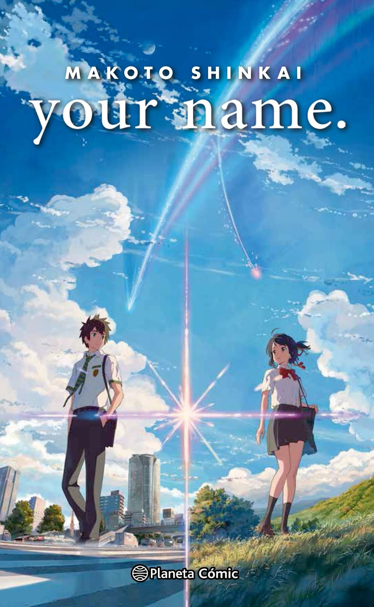

<!-- TODO 1: Create the HTML Boilerplate -->
 <!doctype html>
 <html lang="en">
    <head>
        <meta charset="UTF-8">
        <title>Gida Sonu's Portfolio</title>
        </head>
        <body></body>
        </html>


<!-- TODO 2: Add Your previous projects' HTML into the public folder -->
 
 
 

<!-- TODO 3: Take screenshots of your project previews and add the images to the images folder -->

<!-- TODO 4: Add titles/subtitles etc. -->
<h1>Gida Sonu's Portfolio</h1>
<h2>I'am a Web Developer</h2>
<hr>
<!-- TODO 5: Add a link to the project pages -->
<a href="public/movie-ranking.html">Movie Ranking Project</a>
<br>
<h2>The Best Movies According to Sonu</h2>
 <h3>Best Movie To Watch before You Die!</h3>
 <hr>
 
 <a href="https://www.crunchyroll.com/series/G9VHN9PK3/your-name">Your Name</a>
 <br>

<br>

 <p>Your Name (Kimi no Na wa) is a critically acclaimed anime film directed by Makoto Shinkai, released in 2016. The story revolves around two high school students, Taki Tachibana and Mitsuha Miyamizu, who inexplicably begin to swap bodies intermittently</p>
 <h4>Themes</h4>
<ul>
    <li>Connection and Identity: The film delves into how our identities are shaped by our experiences and relationships.</li>
    <li>Time and Memory: It raises questions about how time affects our connections and the memories we hold dear.</li>
</ul>

 

 <a href="https://www3.stage.netflix.com/title/70305903">Interstallar</a>
 <br>
 
 <p>Interstellar is a science fiction film directed by Christopher Nolan, released in 2014. It explores the themes of space exploration, love, and the survival of humanity through a visually stunning and thought-provoking narrative.</p>
 <h4>Themes</h4>
 <ul>
    <li>Love and Sacrifice: One of the film's central themes is the power of love and its ability to transcend time and space, particularly in Cooper's relationship with his daughter, Murphy.</li>
    <li>Survival and Exploration: The film examines humanity's drive to explore the unknown and the lengths to which we will go to ensure our survival.</li>
 </ul>

 <a href="https://www.justwatch.com/in/movie/i-want-to-eat-your-pancreas">I want to eat your pancreas</a>
 <br>
 
 <p>I Want to Eat Your Pancreas (Kimi no Suizō wo Tabetai) is a Japanese animated film directed by Shin'ichirō Ushijima, released in 2018. It is based on the novel by Yoru Sumino and blends elements of romance, drama, and coming-of-age. </p>
 <h4>Themes</h4>
 <ul>
    <li>The story revolves around the fleeting nature of life, as it follows Sakura Yamauchi, who is suffering from a terminal illness. Her relationship with her disease propels the narrative, prompting characters and viewers to reflect on the fragility of life.</li>
    <li>The narrative encourages acceptance of life's inevitable challenges, urging characters and viewers to understand their emotions and those of others. It highlights the importance of empathy and understanding, especially when facing mortality.</li>
 </ul>
 <br>
 

<!-- TODO 6: Add images to show the project previews
HINT for TODO 6: You can use the height attribute set to 200 to make the image smaller:
https://developer.mozilla.org/en-US/docs/Web/HTML/Element/img#attr-height -->
<br>


<!-- TODO 7: Add the Contact Me and About Me page links -->
 <hr>
 <a href="public/contact.html">Contact me</a>
 <br>
 <a href="public/about.html">about me</a>